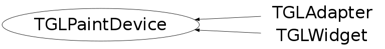

class TGLPaintDevice
TVirtualGL The TVirtualGL class is an abstract base class defining the OpenGL interface protocol. All interactions with OpenGL should be done via the global pointer gVirtualGL. If the OpenGL library is available this pointer is pointing to an instance of the TGLKernel class which provides the actual interface to OpenGL. Using this scheme of ABC we can use OpenGL in other parts of the framework without having to link with the OpenGL library in case we don't use the classes using OpenGL.
Function Members (Methods)
This is an abstract class, constructors will not be documented.
Look at the header to check for available constructors.
public:
| virtual | ~TGLPaintDevice() |
| static TClass* | Class() |
| virtual void | ExtractViewport(Int_t* vp) const |
| virtual const TGLContext* | GetContext() const |
| virtual const TGLFormat* | GetPixelFormat() const |
| virtual TClass* | IsA() const |
| virtual Bool_t | MakeCurrent() |
| TGLPaintDevice& | operator=(const TGLPaintDevice&) |
| virtual void | ShowMembers(TMemberInspector& insp) |
| virtual void | Streamer(TBuffer& b) |
| void | StreamerNVirtual(TBuffer& b) |
| virtual void | SwapBuffers() |
private:
| virtual void | AddContext(TGLContext* ctx) |
| virtual void | RemoveContext(TGLContext* ctx) |
Class Charts
{kind=link}
{kind=link}
{kind=link}
{kind=link}

Function documentation
void SwapBuffers()
const TGLFormat * GetPixelFormat() const
const TGLContext * GetContext() const
void AddContext(TGLContext* ctx)
void RemoveContext(TGLContext* ctx)